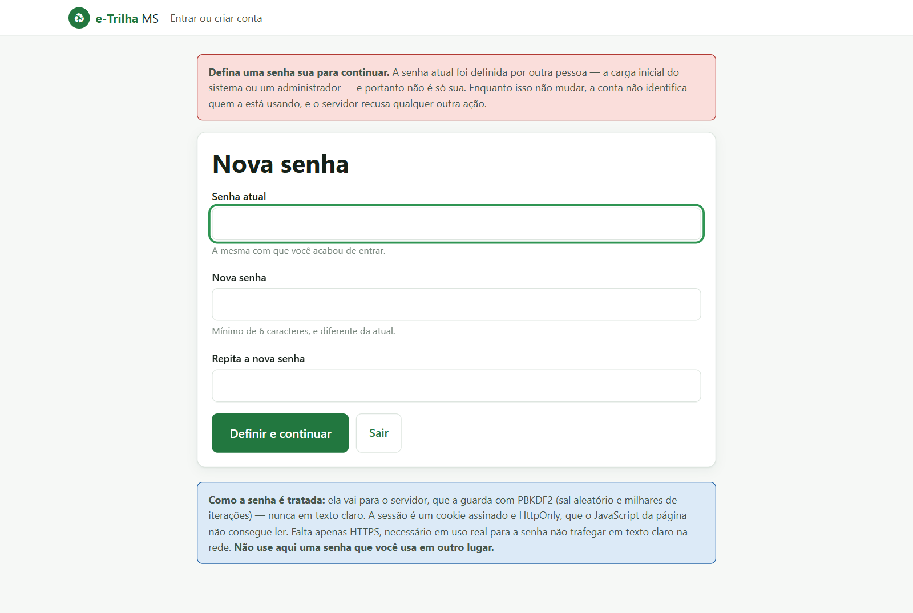
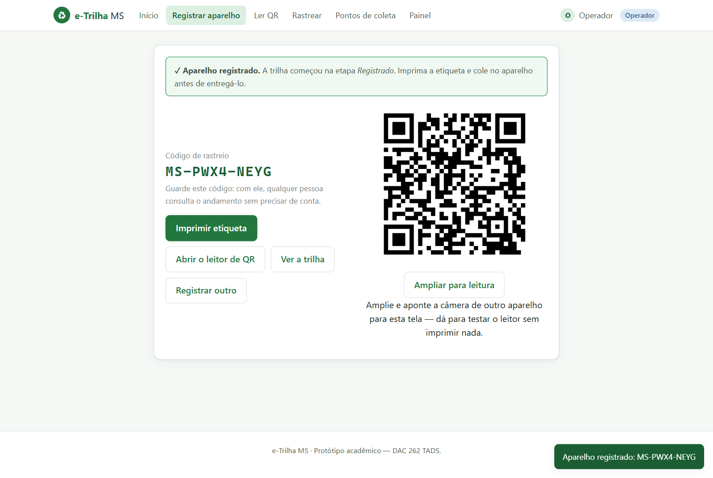
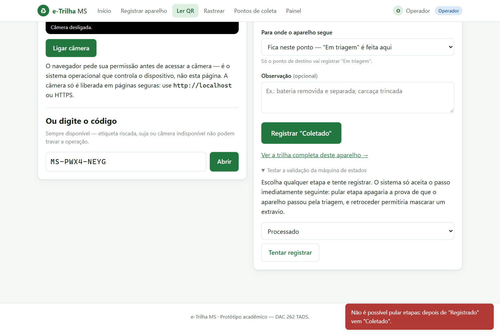
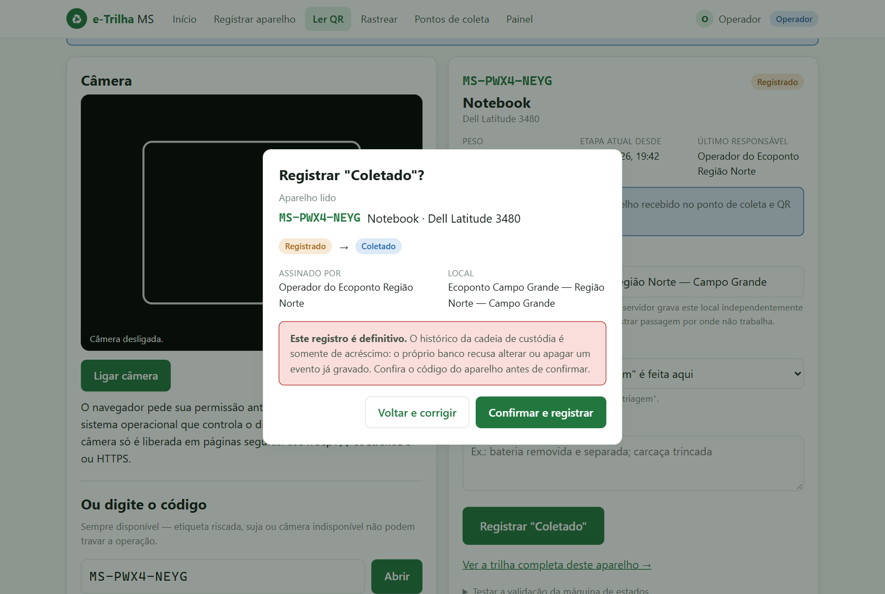
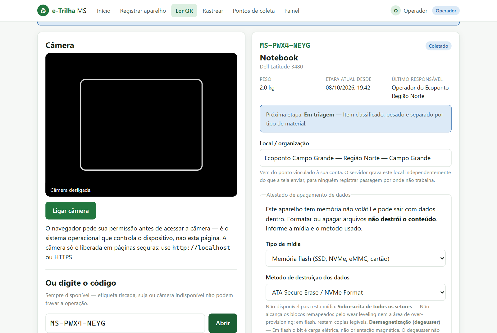
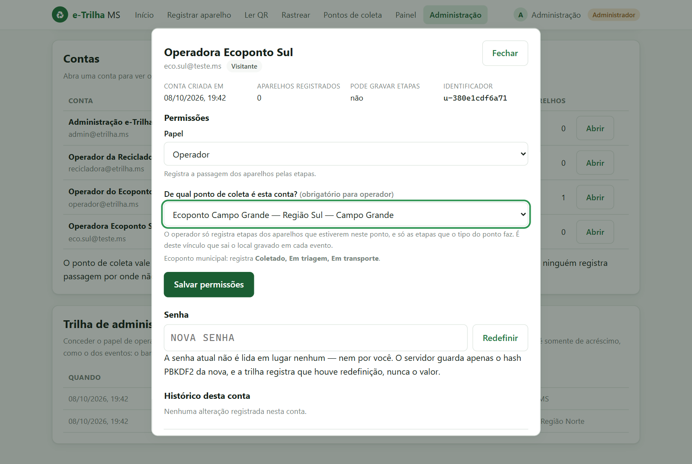
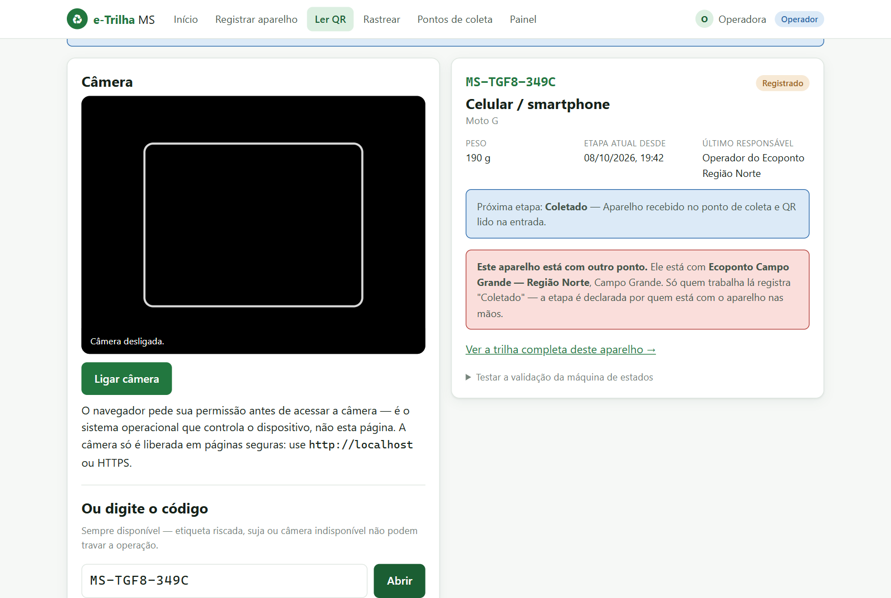
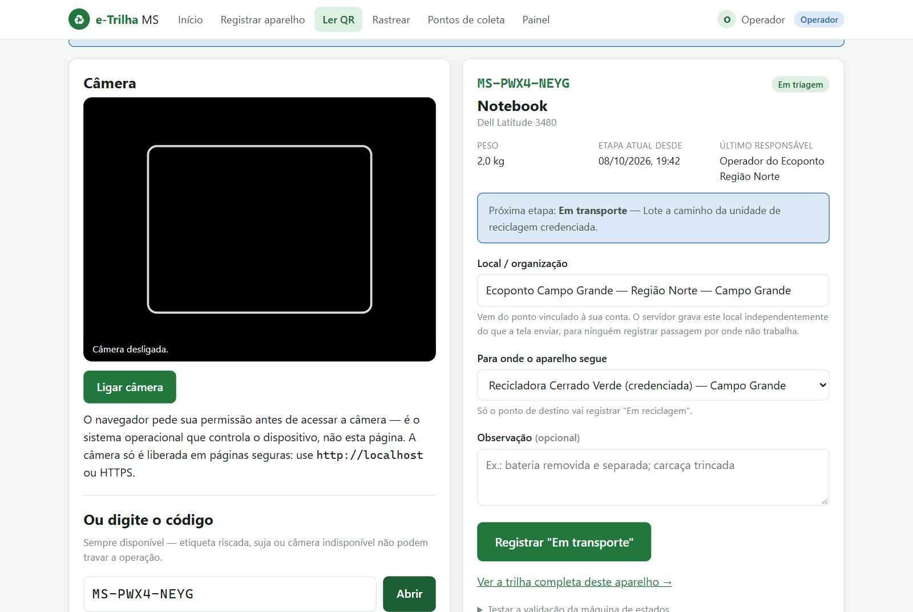
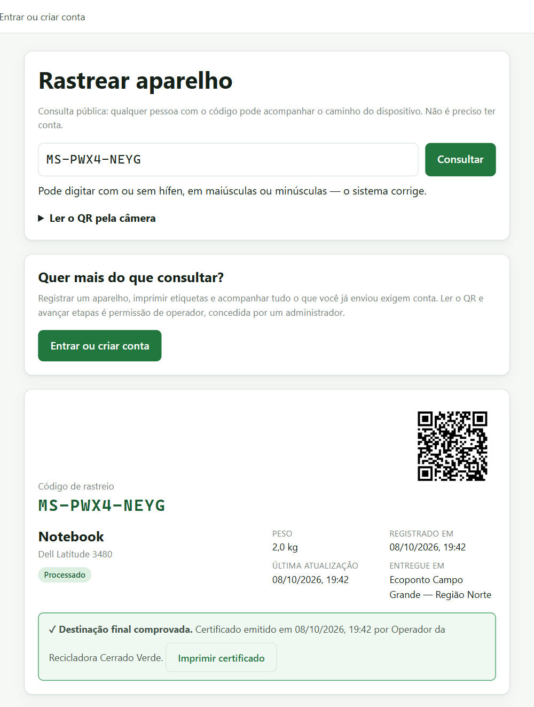
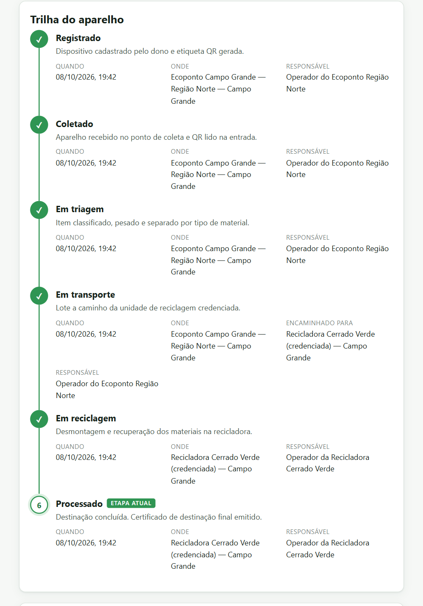

Fluxo principal funcionando, relatório preliminar completo e evidências dos testes
A Etapa 8 pede o fluxo principal funcionando, o relatório preliminar completo e as evidências dos testes. Além disso, fechamos a limitação nº 1 do projeto, que estava no caminho crítico do cronograma.
Cada etapa da cadeia agora só é registrada pelo ponto que está com o aparelho. Todo operador é vinculado a um ponto de coleta no momento em que recebe o papel, e só registra os aparelhos que estão nesse ponto: o ecoponto coleta, faz a triagem e despacha para uma recicladora; só aquela recicladora registra a reciclagem e emite o certificado. Um notebook percorreu a cadeia inteira assim, pela interface, com duas contas. A suíte passou de 366 para 443 testes, todos passando.
| Frente | Situação | O que se fez |
|---|---|---|
| Competência por etapa (RF21) | Implementado | Ponto obrigatório para operador, regra no servidor, tela que não oferece o que seria recusado e 56 testes novos (seção 3). |
| Evidências de teste em imagem | Fechada | Percurso completo capturado em 08/10/2026 (seção 4). |
| Revisão de segurança do servidor | Fechada | Dois defeitos corrigidos em 27/09, com 22 testes novos (seção 5). |
| Relatório Técnico | Preliminar | As 17 seções estão escritas; restam 6 marcadores de trabalho de campo e de fonte (seção 8). |
O fluxo principal responde à pergunta do projeto: um aparelho entregue foi mesmo reciclado? Ele foi executado pela interface, no Chrome, contra o servidor local com banco novo. Nenhuma etapa foi gravada direto no banco.
| # | Quem | Passo | Resultado | Fig. |
|---|---|---|---|---|
| 1 | Ecoponto | Primeiro acesso com a senha sorteada | Sessão presa à troca de senha; o resto da API responde 403 | 1 |
| 2 | Ecoponto | Registra um notebook entregue no próprio ecoponto | Código MS-PWX4-NEYG e QR | 2 |
| 3 | Ecoponto | Tenta pular para Processado | Recusado; etapa continua Registrado | 3 |
| 4 | Ecoponto | Registra Coletado | Confirmação antes de gravar | 4 |
| 5 | Ecoponto | Registra Em triagem | Atestado de apagamento; sobrescrita em flash recusada | 5 |
| 6 | Ecoponto | Registra Em transporte para a Recicladora Cerrado Verde | Sem destino, recusado; com destino, aceito | 8 |
| 7 | Recicladora | Registra Em reciclagem e Processado | Cadeia concluída, certificado emitido | 9 |
| 8 | Sem conta | Consulta o código | Trilha com as duas organizações e o encaminhamento, sem login | 10 |
Até a Pré-Entrega 2, o papel de operador valia para a cadeia inteira. O operador de um ecoponto conseguia registrar Processado de um aparelho que nunca saiu de lá, e o certificado saía assinado por quem não reciclou nada. Agora valem três regras, todas conferidas pelo servidor:
| Etapa | Quem registra |
|---|---|
| Coletado | Ecoponto, PEV, loja/fabricante, cooperativa |
| Em triagem, Em transporte | Ecoponto, cooperativa |
| Em reciclagem, Processado | Só a recicladora |
Na prática: a operadora do Ecoponto Sul não registra a coleta de um aparelho entregue no Ecoponto Norte (Fig. 7); o Ecoponto Norte não registra a reciclagem; e uma recicladora não registra o lote despachado para outra. O admin também passa pelas três regras: escolhe o local, mas só o ponto que está com o aparelho.
# admin dando o papel de operador sem dizer o ponto PATCH /api/admin/usuarios/<id> {"papel":"operador"} HTTP 400 Informe de qual ponto de coleta é este operador. [...] # operadora do Ecoponto Sul, aparelho entregue no Ecoponto Norte POST eventos {"etapa":"COLETADO"} HTTP 403 Este aparelho está com Ecoponto Campo Grande — Região Norte. [...] POST eventos {"etapa":"COLETADO","pontoId":"pt-cg-eco-norte"} HTTP 403 (mesma recusa: o ponto vem da conta, não do corpo) # Ecoponto Norte despachando sem dizer para onde POST /api/itens/MS-PWX4-NEYG/eventos {"etapa":"EM_TRANSPORTE"} HTTP 400 Informe para onde o aparelho segue: "Em reciclagem" é feita por recicladora credenciada [...]
Testes. teste_api_competencia.py tem 50 testes: a matriz completa de tipos de ponto × etapas, a posse (coleta no ponto de entrega, triagem em quem coletou, reciclagem só na recicladora de destino, encaminhamento pelo PEV) e as regras do destino. Mais 3 na administração e 3 de paridade com o navegador. Desligando de propósito a verificação de posse, 7 testes falham; desligando a do destino, outros 7.
Capturadas em 08/10/2026 no Google Chrome, dirigido por script (Playwright), com o servidor em localhost e banco criado só para isso. As demais telas do percurso — entrada, formulário de registro, recusa do admin sem ponto, painel, largura de celular — estão em docs/evidencias-pe3/.

403 a qualquer outra rota.








> python -m pytest --cov=backend --cov-report=term backend\app.py 342 52 85% backend\banco.py 274 5 98% backend\modelo.py 137 0 100% TOTAL 753 57 92% 443 passed in 11.46s
| Arquivo | Testes | O que cobre |
|---|---|---|
teste_modelo.py | 111 | Máquina de estados, dígito verificador, peso, apagamento e papéis, sem banco |
teste_api_autorizacao.py | 65 | Rotas × papéis; 401 (falta entrar) contra 403 (não pode) |
teste_paginas.py | 61 | Portão de autenticação no HTML e arquivos que o servidor entrega |
teste_api_competencia.py | 50 | Novo. Competência por etapa (RF21): tipo, posse e destino |
teste_api_admin.py | 40 | Papéis, ponto obrigatório para operador, exclusão, último admin e reserva |
teste_api_contas.py | 32 | Cadastro, login, troca de senha e queda das sessões antigas |
teste_api_itens.py | 29 | Cadeia de custódia pela API; assinatura vinda da sessão |
teste_paridade_front.py | 26 | Tabelas de regras iguais no servidor e no navegador |
teste_banco_gatilhos.py | 16 | Gatilhos de somente-acréscimo e restrições do banco |
teste_api_corpo.py | 13 | Novo. Corpo JSON que não é objeto recebe 400, e não 500 |
| Total | 443 |
Defeitos corrigidos desde a Pré-Entrega 2, ambos achados em revisão e invisíveis na tela: a troca de senha não derrubava as outras sessões abertas, que continuavam valendo por até 12 horas; e um corpo JSON como [1, 2] derrubava a rota com erro 500.
A regra precisa valer para quem chama a API direto. Saídas registradas na mesma sessão de 08/10:
POST eventos sem sessão HTTP 401 Esta ação exige uma conta. POST eventos como visitante HTTP 403 Sua conta não tem permissão para esta ação. POST eventos EM_TRIAGEM, flash + SOBRESCRITA HTTP 400 [...] o wear leveling remapeou [...] POST eventos EM_TRANSPORTE depois de PROCESSADO HTTP 400 Não é possível retroceder [...] GET rastreio com 1 caractere trocado HTTP 400 Código de rastreio inválido. GET rastreio sem sessão HTTP 200 6 eventos, atestado público # 10 requisições simultâneas pedindo "Coletado" para o mesmo aparelho HTTP 201 × 1 HTTP 400 × 9 O item já está em "Coletado". eventos gravados: 1 # direto no arquivo do banco, sem passar pela aplicação UPDATE eventos -> recusado O histórico de eventos é somente de acréscimo: alterar é proibido. DELETE eventos -> recusado O histórico de eventos é somente de acréscimo: apagar é proibido. UPDATE apagamentos -> recusado O atestado de apagamento é definitivo: alterar é proibido.
A concorrência é o argumento de Sistemas Operacionais: as escritas usam BEGIN IMMEDIATE, que serializa o “ler, decidir, gravar”, e por isso duas leituras simultâneas da mesma etiqueta não gravam a etapa duas vezes.
| Critério | Evidência | Estado |
|---|---|---|
| Um aparelho percorre a cadeia e emite certificado | Fig. 2 a 10 | Atende |
| Etapa fora de ordem é recusada | Fig. 3 e seção 6 | Atende |
| Quem não tem papel não grava | Seção 6 | Atende |
| Operador só existe vinculado a um ponto | Fig. 6 e seção 3 | Atende |
| Só o ponto que está com o aparelho registra a etapa | Fig. 7, 8, 10 e seção 3 | Atende |
| Registro gravado não pode ser alterado | Seção 6 | Atende |
| Método de apagamento ineficaz é recusado | Fig. 5 e seção 6 | Atende |
| Leituras simultâneas não duplicam etapa | Seção 6 | Atende |
| A suíte passa a cada mudança | Seção 5 | 443 testes |
| Funciona em celular real, em campo | Só a largura foi emulada no navegador | Não verificado |
O Relatório está em docs/RELATORIO-TECNICO.md, com as 17 seções exigidas pela DAC escritas. Nesta etapa ele recebeu as evidências (11.2), os números da suíte (11.4), o RF21 implementado (requisitos, autorização, limitações e melhorias futuras) e o cronograma de 08/10. Restam 6 marcadores, nenhum de código:
Do cronograma interno, ficam concluídos o RF21 (previsto para 16/10) e as evidências em imagem (previstas para 23/10). O levantamento de dados do interior segue parcial.
BRASIL. Lei nº 12.305, de 2 de agosto de 2010. Institui a Política Nacional de Resíduos Sólidos. Diário Oficial da União, Brasília, 3 ago. 2010.
BRASIL. Decreto nº 10.240, de 12 de fevereiro de 2020. Regulamenta a implementação de sistema de logística reversa de produtos eletroeletrônicos de uso doméstico e seus componentes. Diário Oficial da União, Brasília, 13 fev. 2020.
KISSEL, R. et al. NIST Special Publication 800-88 Revision 1: Guidelines for Media Sanitization. Gaithersburg: NIST, 2014.
SQLITE. Transaction e CREATE TRIGGER. Disponível em: https://www.sqlite.org/lang_transaction.html
PYTEST. pytest documentation. Disponível em: https://docs.pytest.org/
MICROSOFT. Playwright for Python. Usado só para dirigir o navegador na captura das evidências. Disponível em: https://playwright.dev/python/
Nota de método. As evidências foram produzidas em 08/10/2026 com Windows 11, Python 3.13 e Google Chrome, com o servidor ouvindo apenas em 127.0.0.1. O banco foi criado do zero a partir de dados/*.json e descartado depois; os códigos citados existiram só nele. As referências de contexto do problema estão na Pré-Entrega 2 e no Relatório Técnico.